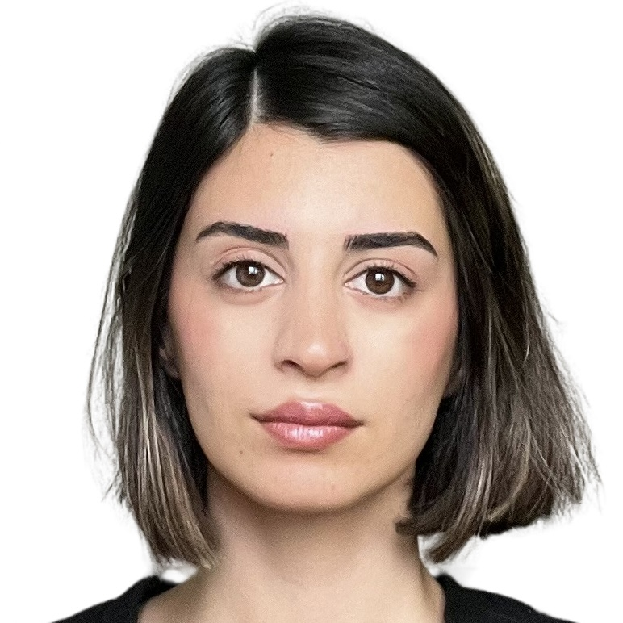

I am a Data Engineer with hands-on experience in building ETL/ELT pipelines, designing data warehouse schemas, orchestrating workflows, and delivering analytics solutions using Python, SQL, Snowflake, Azure, and Airflow. My work focuses on transforming raw industrial IIOT and ERP data into reliable, scalable, and business-ready data products.